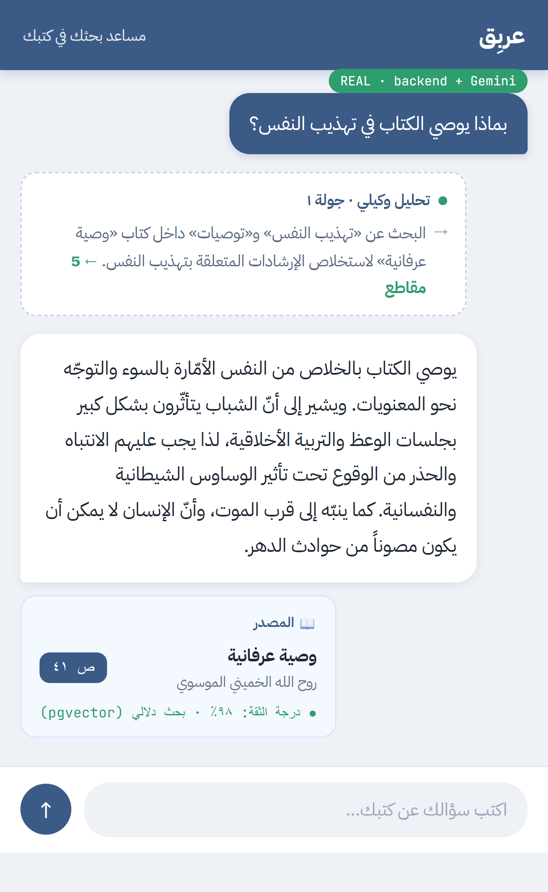
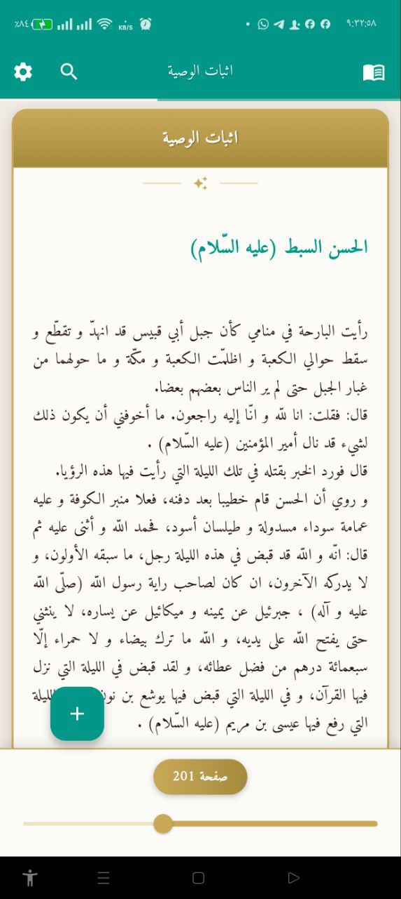
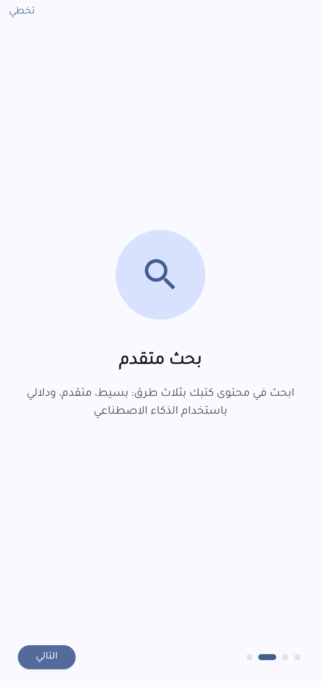
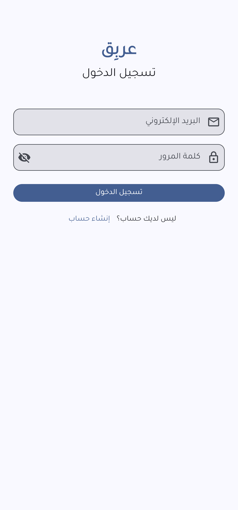

منصّة full-stack تجمع قدرتين متقدّمتين على المستندات: خطّ OCR متعدّد المرّات يحوّل ملفات PDF الممسوحة ضوئياً إلى Word قابل للتحرير بصيغة RTL سليمة، وحلقة بحث وكيلية متعدّدة الدورات (تخطيط ← تقييم ← إعادة تخطيط حتى 5 تكرارات) تبثّ استدلالها لحظياً عبر WebSocket. A full-stack platform with two advanced document capabilities: a multi-pass OCR pipeline that converts scanned PDFs into editable, correctly-RTL Word documents, and a multi-iteration agentic search loop (plan → evaluate → re-plan, up to 5 iterations) that streams its reasoning live over WebSocket.
عربِق قدرتان متمايزتان: بحث RAG وكيلي يبثّ استدلاله مباشرةً، وتحويل عالي الدقّة من PDF إلى Word. Arabiq has two distinct capabilities: an agentic RAG search that streams its reasoning live, and a high-fidelity PDF→Word conversion.
(1) بحث RAG وكيلي: يرفع المستخدمون ملفات PDF (كتباً) داخل مكتبات ويطرحون أسئلتهم؛ فتقوم حلقة وكيل متعدّدة التكرارات بتحليل السؤال ← تخطيط الاسترجاع (بحث دلالي + بحث نصّي + جلب صفحات) ← تنفيذ الأدوات ← تقييم النتائج (كافية / جزئية / غير كافية) ← إعادة التخطيط عند الحاجة (حتى 5 تكرارات) ← تركيب إجابة نهائية مع اقتباس المصادر (الكتاب — المؤلّف — الصفحة). وتُبثّ خطوات الاستدلال مباشرةً عبر WebSocket فيرى المستخدم الوكيل وهو «يفكّر». (1) Agentic RAG search: users upload PDFs (books) into libraries and ask questions; a multi-iteration agent loop analyzes the question → plans retrieval (semantic + text search + page fetch) → executes tools → evaluates results (sufficient / partial / insufficient) → re-plans if needed (up to 5 iterations) → synthesizes a final answer with source citations (book — author — page). It streams its reasoning live over WebSocket so users watch the agent think.
(2) تحويل PDF←Word عالي الدقّة: خطّ OCR متعدّد المرّات (تحليل الجودة ← استخراج هجين ← تحقّق ← كشف البنية) يمزج استخراج النصّ بـ PyMuPDF (للملفات القابلة للبحث) مع Gemini Vision (للملفات الممسوحة/الصورية)، ويكتشف ويصحّح النصّ المشوّه والنصّ المعكوس/المرآتي، ويُخرج مستند .docx منسَّقاً بصيغة RTL سليمة.
(2) High-fidelity PDF→Word conversion: a multi-pass OCR pipeline (quality analysis → hybrid extraction → verification → structure detection) mixes PyMuPDF text extraction (searchable PDFs) with Gemini Vision (scanned/image PDFs), detects and corrects garbled text and reversed/mirrored text, and outputs a properly formatted RTL .docx.
التأريض (grounding) حقيقي: المقاطع المُقتبَسة هي مقاطع فعلية من الكتب بأرقام صفحاتها، تُسترجَع عبر بحث دلالي ومعجمي. Grounding is real: passages are actual chunks with page numbers, retrieved by semantic + lexical search.
لقطات من التطبيق — والمحادثة الوكيلية مُلتقطة من الـbackend الحقيقي (Gemini + pgvector)App screenshots — the agentic chat is captured from the live backend (Gemini + pgvector)




واجهة Flutter ← REST + WebSocket ← FastAPI ← محرّك RAG وكيلي + بحث pgvector + قاعدة + عمّال خلفيونFlutter ← REST + WebSocket ← FastAPI ← agentic RAG engine + pgvector search + DB + background workers
// Flutter app ── REST + WebSocket ──▶ FastAPI Flutter app ├─ REST /api/v1/chat · /books · /search └─ WebSocket /ws/{conv_id} (live agent reasoning stream) │ ▼ FastAPI ├─ Agentic RAG engine │ analyze → plan → execute → evaluate → synthesize (loop · ≤5 iters) ├─ pgvector semantic + lexical search ├─ PostgreSQL │ User/Subscription · Library/Book/Bookmark │ Conversation/Message · DailyUsageSummary ├─ Redis └─ ARQ workers ├─ book_processor OCR + index + chunk ├─ pdf_converter PDF → Word └─ usage_aggregator nightly usage rollup
يستدلّ عبر عدّة تكرارات بحث، ويبثّ كل خطوة (التحليل، الخطّة، التقييم) عبر WebSocket؛ ويعيد التخطيط تلقائياً (حتى 5 تكرارات) عندما تكون النتائج غير كافية.Reasons through multiple search iterations, streams each step (analysis, plan, evaluation) over WebSocket; auto re-plans (up to 5 iterations) when results are insufficient.
يوجّه ملفات PDF القابلة للبحث إلى PyMuPDF (سريع) والملفات الصورية/الممسوحة إلى Gemini Vision (دقّة عالية)، صفحة واحدة لكل طلب حفاظاً على الدقّة، مع تراجع سلس عند الفشل.Routes searchable PDFs to PyMuPDF (fast) and image/scanned PDFs to Gemini Vision (high accuracy), one page per request for fidelity, with graceful fallback.
استدلالات إحصائية (أداة التعريف «ال» تمثّل نحو 25% من الكلمات العربية؛ فإن تجاوزتها الصيغ التالفة، كان النصّ مشوّهاً)، وكشف النصّ المعكوس/المرآتي، وإصلاح التشكيل والكلمات المقطوعة.Statistical heuristics (the definite article "ال" is ~25% of Arabic words; if corrupted forms exceed it, the text is garbled), reversed/mirrored text detection, diacritic and split-word fixes.
تُفهرَس المقاطع بـ embeddings؛ يدعم embeddings من Gemini (موثوقة) أو embeddings محلية اختيارية على GPU؛ بحث هجين دلالي + بالكلمات المفتاحية.Passages indexed with embeddings; supports Gemini embeddings (reliable) or optional local GPU embeddings; semantic + keyword hybrid search.
مكتبات ← كتب ← إشارات مرجعية؛ والمحادثات مقيَّدة بنطاق مكتبة كاملة أو كتاب واحد؛ معزولة تماماً لكل مستخدم.Libraries → Books → Bookmarks; conversations scoped library-wide or to a single book; fully isolated per user.
تتبّع استخدام على مستوى الرسالة، حصص شهرية تُفرَض قبل الطلب، بدمج الأيام المكتملة (DailyUsageSummary) مع صفوف «اليوم» الحيّة لتفادي الثغرات عند تشغيل المجمِّع الليلي.Message-level usage tracking, monthly quotas enforced pre-request, combining completed days (DailyUsageSummary) + live "today" rows to avoid gaps when the nightly aggregator runs.
| الخلفيةBackend | FastAPI · Python 3.12 (غير متزامن)(async) |
| قاعدة البياناتDatabase | PostgreSQL + pgvector · SQLAlchemy async + asyncpg · Alembic (3 ترحيلات)(3 migrations) |
| التخزين/الطابورCache / Queue | Redis + ARQ عمّالworkers |
| الذكاء/RAGAI / RAG | Google Gemini (نصّ · رؤية · embeddings)(text · vision · embeddings) · sentence-transformers محلية اختيارية (GPU)optional local sentence-transformers (GPU) |
| المستنداتDocuments | PyMuPDF · python-docx · Pillow |
| معالجة النصوصText processing (NLP) | PyArabic · استدلالات جودة OCR مخصّصة· custom OCR-quality heuristics |
| الواجهةFrontend | Flutter 3.5 (Riverpod · go_router · Dio + WebSocket)(Riverpod · go_router · Dio + WebSocket) |
| DevOps | Docker Compose · structlog · GitHub Actions (95 اختباراً)(95 tests) |